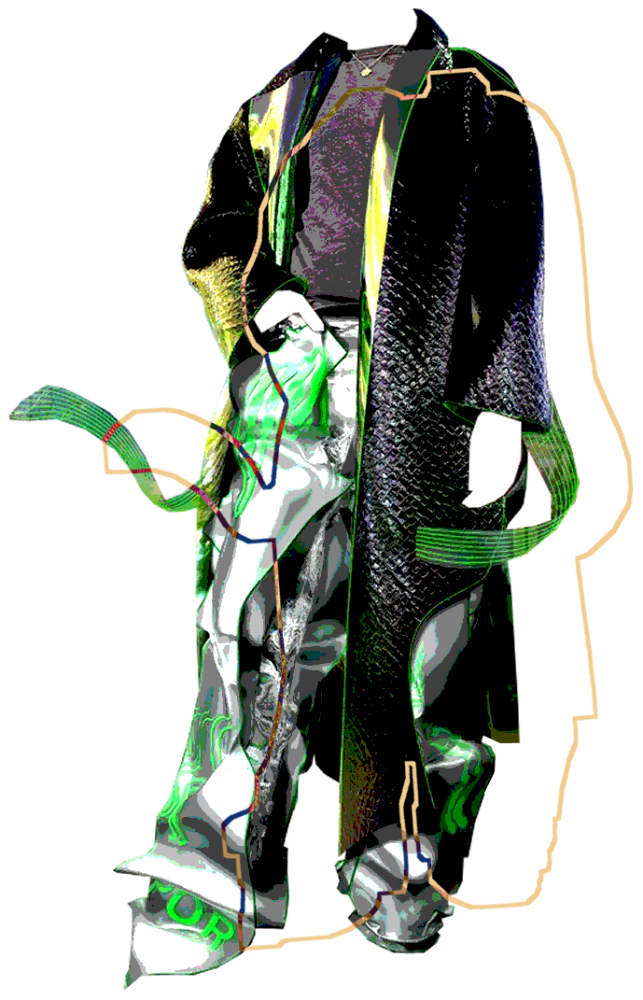

℣irℸuaⅬ ℹⅅeℵtitℽ
â…‹
ωⅇaℜab⅊e ₸eςh
Digital Clothing Catalogue
Our collection of hand-selected digital fashion and clothing.
Tailored to you, the modern fashionista.

🥬⬛⚽
cyber trenchcoat, shirt and sweatpants set. contactless&cyber custom.
/ Tribute
2020

📘🌧️🏢
louis vuitton x virgil abloh jacket.
Oksana Kukla and Richard Thornn
/ HUM.AI.N
2021
🐙💨🍖
long dress with puffed arm warmers.
Roei Derhi
/ Placebo
2021

🌈🌼🎡
a series of vibrant, playful prints, designed to be genderless on the wearer.
Aeropalmics x Republiqe Clothing
/ Aeropalmics
2021

🧧🃏📿
beaded jacket and dress, inspired by the king of diamonds
/ ELLE
202x

💫ğŸğŸ’¿
holographic galaxy vest with flared black pants
DRESS-X x H&M x Maisie Williams
/ H&M
2022

☄️🩰🍾
Gucci 'VIRTUAL 25'
low-top high-top hybrid sneakers.
Alessandro Michele x Wanna
/ Gucci
2021

🦑🦠🦗
'FIBONACCI LOOK' hooded jacket inspired
by The Day of the Triffids, on
asymmetrical dress.
Paula Sello and Alissa Aulbekova
/ AUROBOROS
2021
ğŸ€ğŸ 🔮
'OG Edition' Atari sneaker.
Inspired by the blocky modularity of the Atari console,
buildings and skyscrapers.
RTFKT x Fewocious
/ RFTKT
2021
🍏🎐🌷
a beaded watercolour bucket hat with uv sheets
and holographic trim for sun protection
/ unknown
20xx

{kind=link}